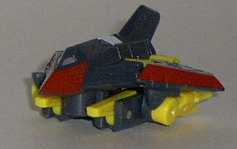
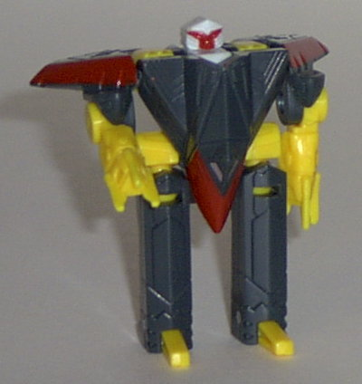
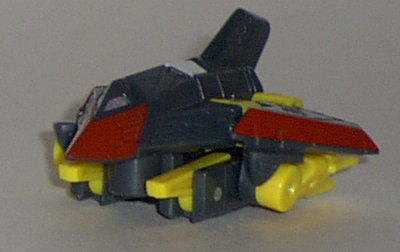
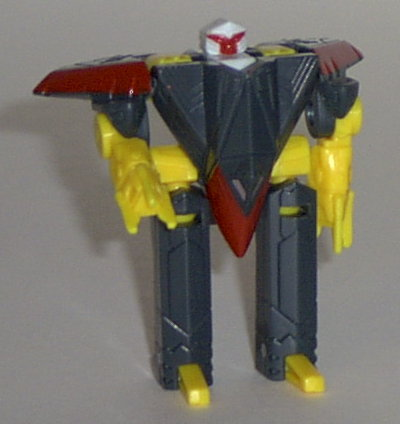
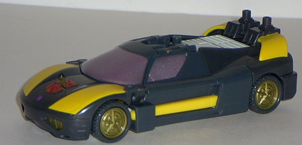
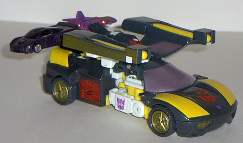
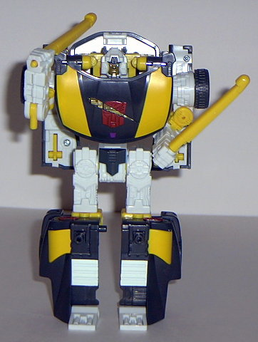

Wind
Sheer
Wind
Sheer
 
Allegiance : Minicon
Size : Mini-Con
Difficulty of Transformation : Very Easy
Color Scheme : "Cheese" yellow, dark gray, and some dark red, dull gold, and white
Rating : 6.6
Wind
Sheer


Allegiance
: Minicon
Size
: Mini-Con
Difficulty of Transformation
: Very
Easy
Color Scheme
: "Cheese" yellow, dark
gray, and some dark red, dull gold, and white
Rating
: 6.6
Vehicle mode is a stealth
jet. This mode is decent, if not outstanding. The legs on the bottom are
the only real extras, but even those blend in pretty well with the rest
of the plane. The thing I really don't like about this mode, though, is
that stupid red nose. It makes the stealth bomber look like some kind of
cartoonish duck-thing. The wings also aren't quite large enough, either.
The overall color scheme is decent, but not spectacular; I would have preferred
just black as opposed to the dark grey, and the red highlights to be replaced
with gold or something. Still, it's overall an okay mode. There are two
Minicon symbols- one on each wing- and the Minicon port is on the bottom,
slightly to the rear of the nosecone.
The robot mode is, again,
decent. The legs pop out of the sides of the main body, though, which I'm
not too crazy about, but the hand-claws are really spiffy, as are the winds
on the shoulders. His head is really, really goofy looking, though- it
looks like it was smashed in transit or something. It also has a distinctive
"owl" look to it, which I found interesting.
Wind Sheer is a mixed
bag- he has just about as many good points about him as he does bad points.
Still, a nice way to beef up your Minicon army a little.
 Wheeljack
Wheeljack



Allegiance
: Decepticon
Size
: Super-Con
Difficulty of Transformation
: Medium
Color Scheme
: Dark gray, "cheese"
yellow, white, and some dull gold, metallic light purple, and dark red
Powerlinx ports
: 3 (1 gimmicked)
Rating
: 7.8
Vehicle mode is a lamborghini-esque
sportscar. This mode is very nice, overall. No extras whatsoever, and a
very smooth, streamlined, solid body. The only thing I'm not too fond of
is toeh overall color scheme- the dark gray should have been black, and
I would have picked another complimentary color besides cheese yellow.
The metallic light purple and gold are wonderful, however. I also like
the large slashed Autobot symbol with a smaller Decepticon symbol under
it. It certainly adds character. Attach Wind Sheer to the Minicon port
behind his windows (not many other Minicons can fit in that specially-designed
space), and the doors flip upwards to activate Wheeljack's "flight" mode.
I actually think this is pretty cool- and not only that, but if you press
the triggers on the bottom of the doors, missiles fire out of then! That's
nifty. Unfortunately, you can kinda see all of the robot innards if you
do activate this mode. Also, the two Powerlinx ports on the rear of the
car are too close together- it's hard to get two Minicons on those ports
at once.
Although relatively
kibble-free, I find Wheeljack's robot mode kinda boring. I mean, this same
basic robot design's been done to death- doors on back, car front on chest,
rear of the car becomes the legs. Yawn. Usually Armada is more creative
and original than this. Although at least the doors on this guy sorta look
like wings on the back. I also really like all the mechanical detailing
he's got goin' on. It's slightly asymmetrical, which keeps up with the
"Armada Decepticon" look. However, the inside of his legs looks kinda weird,
as they're hollow on two sides! Also, Wheeljack has pretty poor articulation-
he can move his shoulders (at two points, but both are rather limited),
the elbows, and the hips. He can technically also move at the knees, but
that's only side-to-side articulation, which is kinda useless. I also don't
like those ugly yellow levers on the sides of Wheeljack's head. Makes him
look too toyish. Still, good proportions and detailing overall.
Like his Minicon Wind
Sheer, Wheeljack is decent, but not outstanding. He has a pretty boring
transformation, and some oddities in robot mode. He also has a rather odd
color scheme. Still, you could certainly do worse. He's aight.
Review by Beastbot